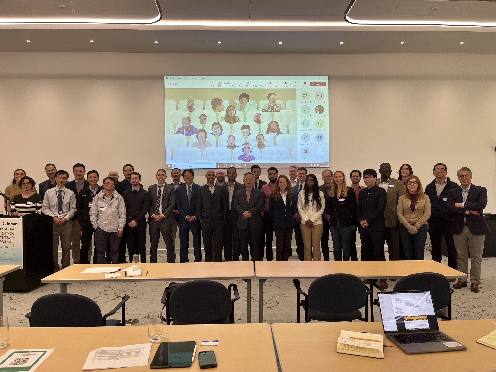

ABOUT THE COLLABORATIVE
Understanding our purpose, mission, and approach to collaboration.

OUR PURPOSE
Bringing the regional proton community together.
The Collaborative serves proton therapy professionals and proton treatment centers throughout the District of Columbia, Maryland, and Virginia region.
The purpose of the DMV Proton Therapy Collaborative is to promote education, scientific exchange, professional collaboration, quality improvement, and academic activity among proton therapy centers and professionals in the DMV region.
OUR MISSION
Advancing proton therapy through shared knowledge.
The mission of the Collaborative is to advance proton therapy practice through regional academic collaboration, multidisciplinary education, scientific discussion, and shared learning among radiation oncologists, medical physicists, dosimetrists, radiation therapists, trainees, researchers, engineers, and other professionals involved in proton therapy.
ANNUAL MEETING
The DMV Proton Symposium.
The principal visible activity of the Collaborative is the annual one-day DMV Proton Symposium.
The symposium provides a forum for scientific presentations, clinical practice discussions, technology updates, quality assurance discussions, trainee education, and inter-institutional collaboration.
Explore the SymposiumORGANIZATION
Designed for collaboration.
The Collaborative is governed by a four-person Committee representing participating proton therapy centers in the DMV region.
The Committee provides academic and administrative oversight for the Collaborative and its activities, including the DMV Proton Symposium.
Additional working groups may be formed as needed to support symposium planning, scientific programming, outreach, trainee engagement, and other Collaborative activities.